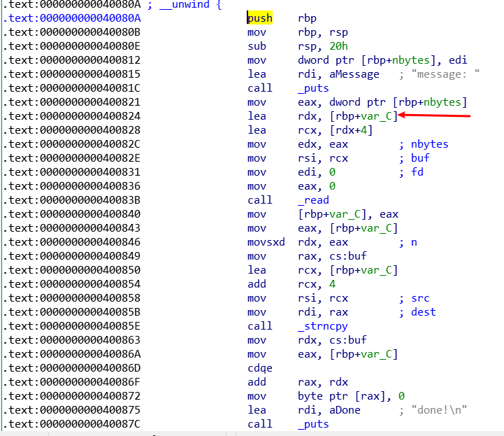
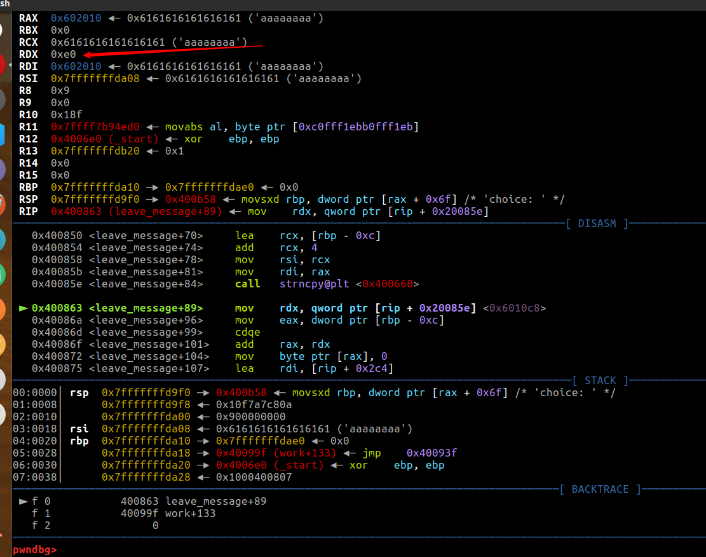
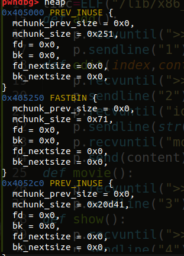
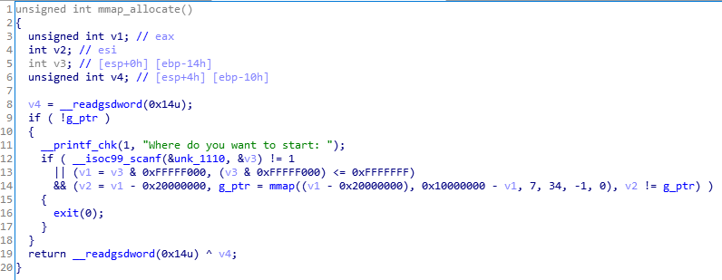
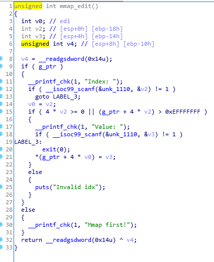

babymessage
在work函数中

v1被赋值为16，而v3距离rbp的偏移是0x8，有8字节的溢出，可以控制到rbp，查看leave_message函数的汇编代码，发现read的size，也就是rdx，受rbp加一个偏移的控制，那么我们只需要控制到rbp，就有机会控制size，可以造成栈溢出
那么我们控制rbp的值为0xe0，调试查看rdx的值

可以看到rdx已经被我们改成0xe0了，那么read的字节数就是0xe0，那么接下来直接rop
exp
1 | #!/usr/bin/env python |
babynotes
glibc2.23，存在uaf，存在off by one，存在溢出，解法有好几种，先放一种，有时间再研究其他的
regist
1 | int regist() |
regist函数中可以看到name和age使用的是同一个栈，那么可以让name和age相连，然后通过strcpy复制到dest中，造成溢出，修改下一个chunk的size
先利用uaf直接leak libc，接着进入reset函数，再次进入regist函数修改name和age，通过溢出，修改index为2的chunk size为0xe1，即0x70的2倍，并将index为2的chunk free掉，形成chunk overlap
通过申请把原chunk2大小的数据切割出来，unsorted bin里面剩下的chunk就是chunk3对应的块，此时chunk3没有释放，再次申请同样大小的chunk，就能将chunk3的指针放在index=1的位置上，从而使1=3
接下来就是老生常谈的，通过uaf，改fd为malloc_hook，打malloc_hook为one_gadget
exp
1 | #!/usr/bin/env python |
Just_a_Galgame
1 | __int64 __fastcall main(__int64 a1, char **a2, char **a3, double a4) |
1是创建一个0x68大小的chunk，2是通过index索引指针并向指针+0x60的地方写0x10的数据，3是malloc一个0x1000的大块，4是show，5是向0x4040A0的地方写8字节数据，而堆指针存放在0x404060处，所以可以获得一个越界写，直接写chunk里的内容
但是程序没有free功能，这里就需要利用house of orange来实现类似于free的功能，搞出libc地址
house of orange
现学了一下house of orange，简单来说是当前堆的top chunk大小不足以满足申请分配的大小的时候，原来的top chunk会被释放并被置入unsorted bin中，那么就可以在没有free的情况下获取到unsorted bins，也就能搞到libc地址
但是需要满足以下几个条件
- 伪造的size必须要对齐到内存页
- size要大于MINSIZE(0x10)
- size要小于之后申请的chunk size + MINSIZE(0x10)
- size的prev inuse位必须为 1
在这里，我们通过越界写，改top chunk的size，但是需要对齐到内存页，看看一开始的时候top chunk是多大

那我们改成0xd41就彳亍了
接着通过地址之间的差计算出index，直接打malloc_hook为one_gadget就彳亍
exp
1 | #!/usr/bin/env python |
Siri
这个题搞了好多天，大哥们都说简单，我觉得挺难顶，反正总算调出来了，
挺明显的格式化字符串漏洞，能重复利用，先验证一些字符串是否相等，然后再fmt，因为多了点字符串，所以这里涉及到一些字节的对齐问题，要慢慢调调看看思路就是：
利用格式化字符串任意写，改malloc_hook为one_gadget，然后printf(“%1000000c”)，这个操作会触发malloc函数
exp
1 | #!/usr/bin/env python |

脚本里有一些细节的问题，我应该会记在本地，后续看心情上博客，反正这题，做的挺不容易的，问了至少有5个师傅，我是真菜
oldschool
需要自己编译，编译命令是GCC -m32 -O3，环境是Ubuntu 18.04
mmap_allocate函数

mmap_edit函数，存在任意写

这里我一开始想的是，mmap_allocate问我们从哪里开始，那我寻思就填个地址才对，比如说填那个0xe0000000，说明我们mmap出来的空间是以0xe0000000为首地址的
这里因为是四字节，所以0-0x20000000=0xe0000000，所以分配出来的首地址，就是0xe0000000，然后利用mmap_edit函数任意写，计算free_hook函数的idx，向里写system
exp
1 | #!/usr/bin/env python |